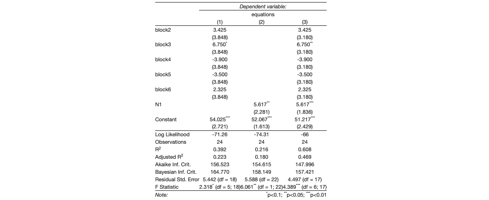

Building A Table of Multiple Linear Regression Models with Stargazer
Author
Fendi Tsim
Published
March 28, 2023
Introduction
In this post, I present a method to combine results of multiple linear regression models in a latex regression table with stargazer (R package).
The aim is to simplify regressions generation processes with a user-defined set of Independent Variables (IVs) for each regression model, and show all results in a regression table with stargazer. This is very helpful when adding (or removing) new IVs in current regression model gradually.

Load packages
require(stargazer) # Load stargazer
Loading required package: stargazer
Please cite as:
Hlavac, Marek (2022). stargazer: Well-Formatted Regression and Summary Statistics Tables.
R package version 5.2.3. https://CRAN.R-project.org/package=stargazer
Function
I created a function called Regress for combining results of all regression models into a single table:
Regress <-function(data, DV, eq.IVs, OutcomeLabel){ equations <-paste0(DV, " ~ ", eq.IVs) # Create equations RegResults <-list() # Create an empty list that stores all regression results LogLike <-c("Log Likelihood") # Storing log-likelihood of all regression resultsfor(i in1:length(equations)){ reg <-lm(formula = equations[i], data = data) reg$AIC <-AIC(reg) # Include Akaike Inf. Crit. reg$BIC <-BIC(reg) # Include Bayesian Inf. Crit. RegResults[[paste0(OutcomeLabel, "_", ifelse(i<10, paste0(0, i), i))]] <- reg LogLike <-append(x = LogLike, values =round(logLik(reg),2)) }# Export RegResults as doc return(stargazer(RegResults, type ='html', out =paste0("Regression_Results_", OutcomeLabel, ".doc"), add.lines =list(LogLike)) )}
This function Regress contains multiple inputs:
data for the set of data used in multiple linear regression models
DV refers to dependent variable of multiple linear regression models
eq.IVs refers to set of IVs in each multiple linear regression model
OutcomeLabel refers to the document name of the outcome (user-defined)
Note that this function also includes model results of Akaike Information Criterion (AIC), Bayesian Information Criterion (BIC) and Log likelihood (LogLike) for models comparison.
This function returns with the regression table results in word document format.
Example
Here npk (R Datasets) is used for illustration. Three regressions are generated using lm(), with yield as dependent variable, as well as block and N as independent variables.
First we import the dataset:
npk <- datasets::npk # Using R Datasets (Classical N, P, K Factorial Experiment)
We then define the dependent variable, which is yield in this case:
DV ='yield'# Set dependent variable
Next, we define the set of IVs in each regression model. The first equation has block as IV. The second one has N. The last one has both as IVs:
# Create a list of equations with independent variables# Here 1st equation is block, 2nd with N, 3rd with block and Neq.IVs <-c("block",'N','block + N' )
Then we generate the regression table with the function Regress:
The result looks like this (here I use htmltools package for showing the result, but it is saved as a .doc file in the current working directory once the function is executed):
htmltools::knit_print.html(RegressionTable)
Dependent variable:
equations
(1)
(2)
(3)
block2
3.425
3.425
(3.848)
(3.180)
block3
6.750*
6.750**
(3.848)
(3.180)
block4
-3.900
-3.900
(3.848)
(3.180)
block5
-3.500
-3.500
(3.848)
(3.180)
block6
2.325
2.325
(3.848)
(3.180)
N1
5.617**
5.617***
(2.281)
(1.836)
Constant
54.025***
52.067***
51.217***
(2.721)
(1.613)
(2.429)
Log Likelihood
-71.26
-74.31
-66
Observations
24
24
24
R2
0.392
0.216
0.608
Adjusted R2
0.223
0.180
0.469
Akaike Inf. Crit.
156.523
154.615
147.996
Bayesian Inf. Crit.
164.770
158.149
157.421
Residual Std. Error
5.442 (df = 18)
5.588 (df = 22)
4.497 (df = 17)
F Statistic
2.318* (df = 5; 18)
6.061** (df = 1; 22)
4.389*** (df = 6; 17)
Note:
*p<0.1; **p<0.05; ***p<0.01
The complete code is shown as follows:
npk <- datasets::npk # Using R Datasets (Classical N, P, K Factorial Experiment)DV ='yield'# Set dependent variable# Create a list of equations with independent variables# Here 1st equation is block, 2nd with N, 3rd with block and Neq.IVs <-c("block",'N','block + N' )RegressionTable <-Regress(data = npk, DV = DV, eq.IVs = eq.IVs, OutcomeLabel ="NPK")